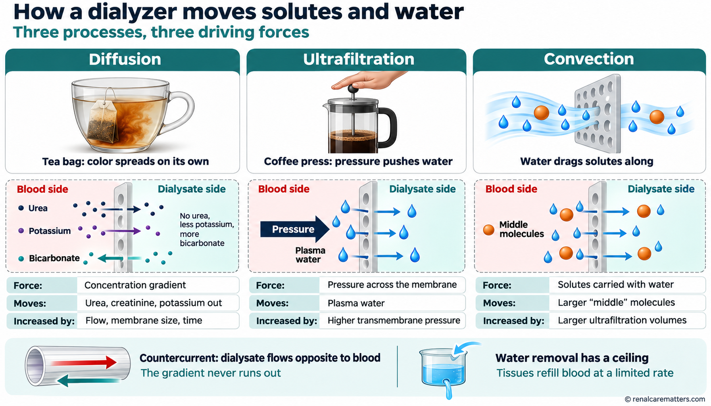
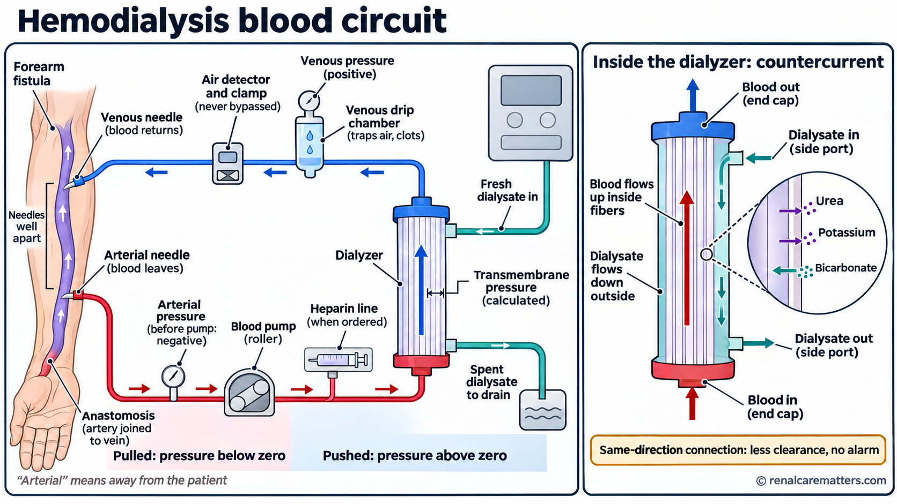
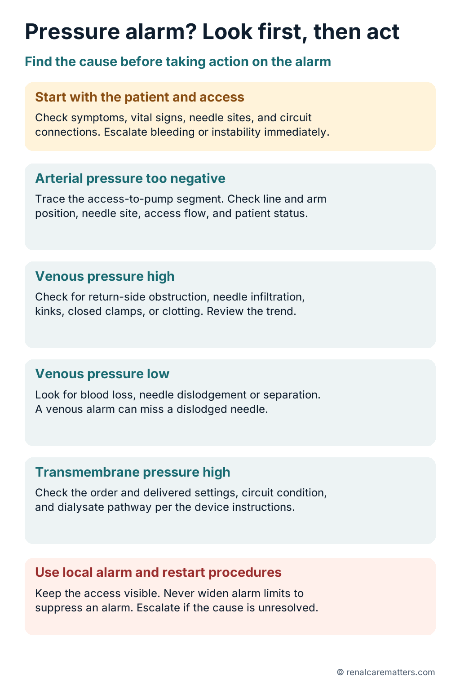
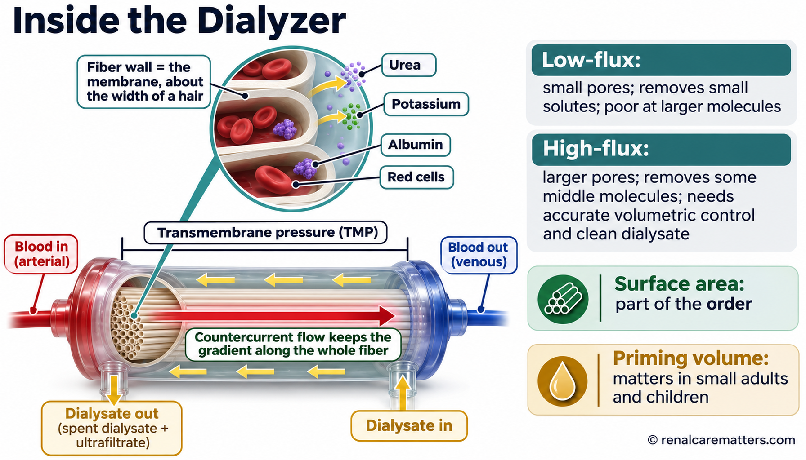
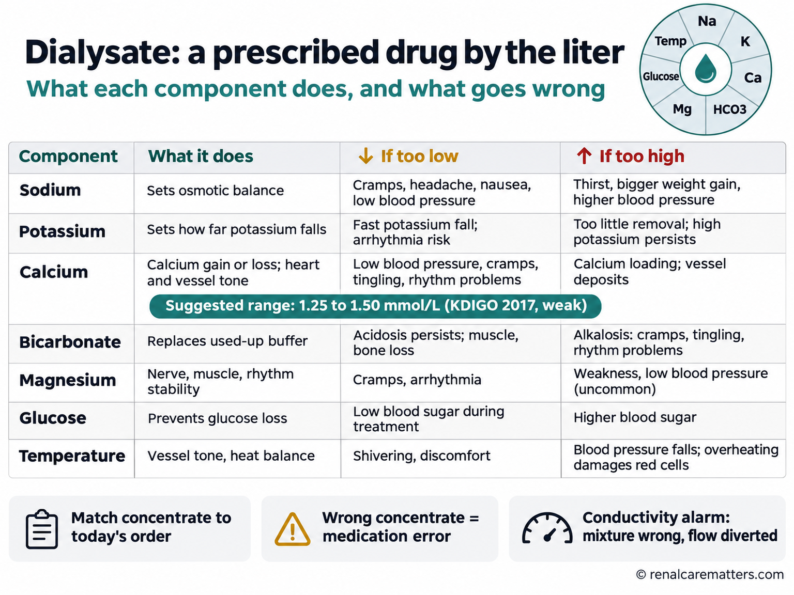
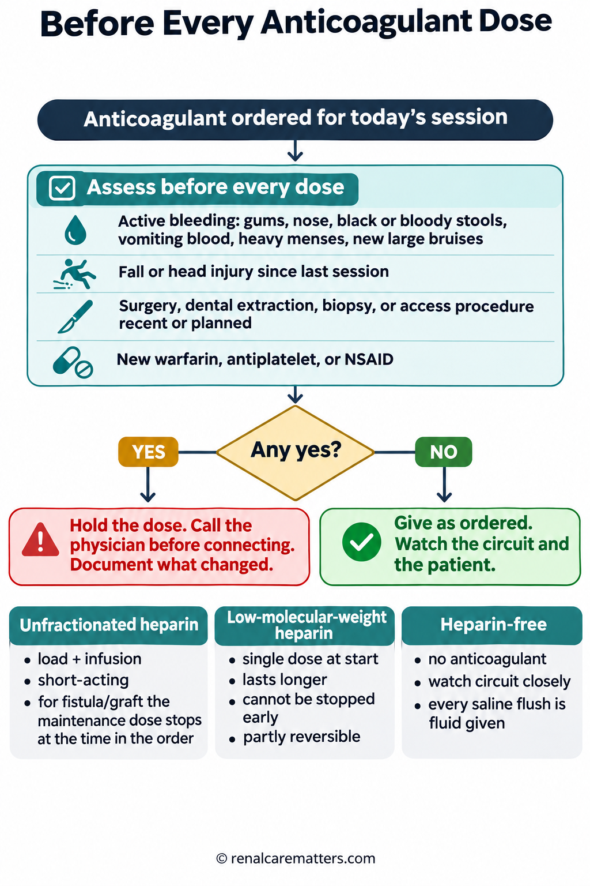
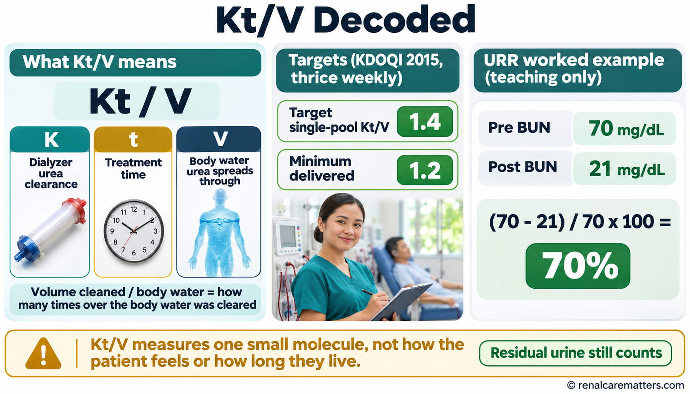
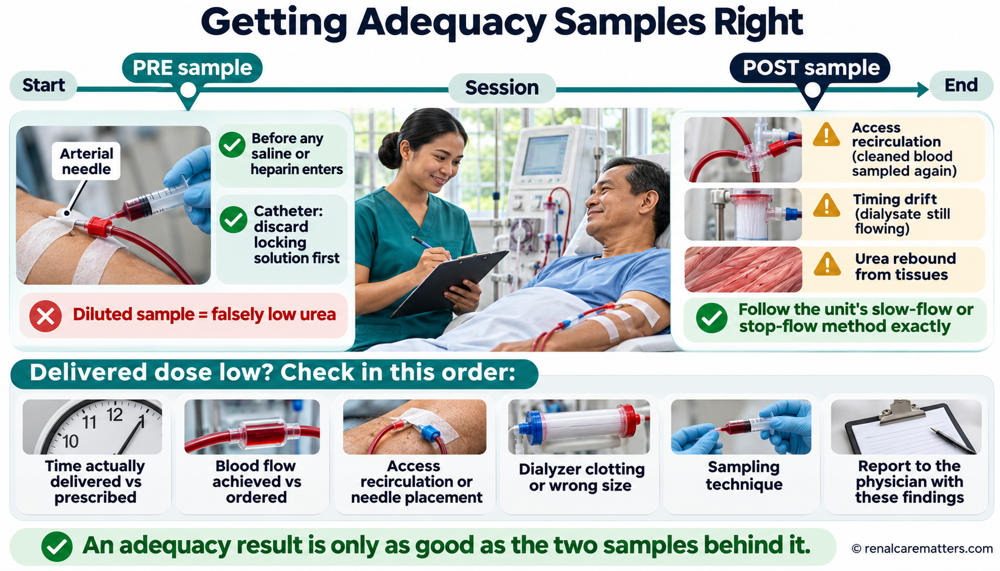
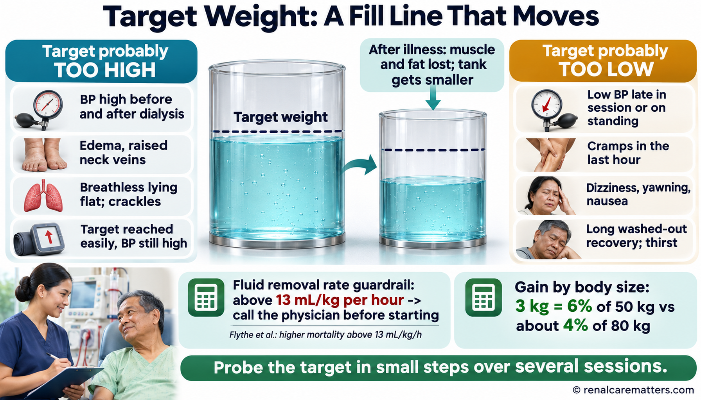

After this module you should be able to
- Explain diffusion, ultrafiltration, and convection and name the driving force of each.
- Verify each element of a hemodialysis prescription against the order before treatment.
- Calculate a fluid-removal goal and hourly ultrafiltration rate, accounting for fluids given during treatment.
- Interpret Kt/V and urea reduction ratio and list common reasons for low delivered adequacy.
- Recognize when a prescribed fluid goal warrants a call to the physician.
- Trace the blood circuit from access to access and interpret arterial, venous, and transmembrane pressure alarms.
- Explain what each dialysate component and each anticoagulation strategy does, and the direction of risk when it is wrong.
- Describe correct pre- and post-dialysis urea sampling and the practical ways to raise a low delivered dose.
- Assess target weight as a clinical judgment that changes over time, and teach salt and fluid control.
A tea bag and a press
Two kitchen pictures cover most of what happens inside a dialyzer. The first is a tea bag in a cup of water. Color spreads through the porous bag from where it is concentrated to where it is not, until both sides match. Nothing pushes it. The difference in concentration does the work. The second is a coffee press. Pushing the plunger forces water through a mesh. Here the pressure does the work. The first is diffusion, and it is how hemodialysis (HD) removes urea and potassium. The second is ultrafiltration, and it is how HD removes water.
The pictures have two limits. A cup of tea stops changing once both sides match. In a dialyzer, fresh dialysis fluid flows continuously in the opposite direction to the blood, so the two sides never match, and the concentration difference holds along the whole length of the fibers. A coffee press also has an endless supply of water above the mesh. The blood does not. The water the machine removes must be replaced from the tissues, and that refilling has a speed limit.
Most sessions run as written. Some do not, because the order no longer fits the patient, the machine does not match the order, or the minutes are not delivered. Your work is to check the prescription line by line before you start, to calculate the fluid goal correctly, and to call when the numbers say the session will be unsafe or too short.
Gradients move wastes. Pressure moves water. The patient’s refilling sets the safe pace.
Three transport processes
| Process | Driving force | What it mainly moves | What increases it |
|---|---|---|---|
| Diffusion | Concentration gradient | Small solutes: urea, creatinine, potassium; bicarbonate moves into the blood | Higher blood and dialysate flow, larger membrane, longer time |
| Ultrafiltration (UF) | Pressure gradient across the membrane | Plasma water | Higher transmembrane pressure, more permeable membrane |
| Convection | Solutes carried along with ultrafiltered water | Larger “middle” molecules | Larger ultrafiltration volumes, as in hemodiafiltration |
Dialysis fluid is not plain water. Its recipe decides which way diffusion moves each substance. It holds no urea, so urea leaves the blood. Its potassium is below the patient’s, so potassium leaves at a controlled pace. Its bicarbonate is above the patient’s, so buffer enters. That is why the dialysate potassium and calcium are part of the prescription, and why connecting the wrong concentrate is a medication error.
Water removal has a ceiling set by the body, not the machine. Ultrafiltration takes water only from the bloodstream. The tissues then refill the bloodstream, but at a limited rate. When removal outpaces refilling, blood volume falls. The patient develops cramps, nausea, or low blood pressure. A large patient has more tissue fluid to draw on than a small one, so the risk depends on the rate per kilogram of body weight, not on the total alone.
Dialysate is a prescribed drug. Check it against the order like one.

The blood circuit, step by step, and what each pressure means
Picture the circuit as a loop of tubing with one pump in it. Everything before the pump is being pulled, so the pressure there is below zero. Everything after the pump is being pushed, so the pressure there is above zero. Almost every pressure alarm can be reasoned out from that one picture. Find which side of the pump the sensor sits on. Then ask what would make the pulling or the pushing harder or easier.
The picture has a limit. The loop runs through a living patient. A pressure can change because the tubing kinked, but also because the patient’s blood pressure fell, the arm bent, or the needle moved. That is why you look at the patient before the machine.
- Arterial needle or catheter limb. Blood leaves the patient here. “Arterial” names the direction (away from the patient), not the vessel.
- Arterial (pre-pump) pressure monitor. This sensor sits between the access and the pump. It reads negative because the pump is drawing blood through a narrow needle. The harder it is for the access to supply the blood the pump demands, the more negative the reading becomes.
- Blood pump. A roller pump squeezes the tubing segment forward. The flow shown on the screen is calculated from pump speed; when the arterial pressure is very negative, the tubing does not refill completely and the true flow is lower than the displayed flow.
- Dialyzer. Blood passes through the hollow fibers while dialysate passes around them. Anticoagulant, when ordered, is usually infused before the dialyzer.
- Venous drip chamber, air detector, and venous clamp. The chamber traps air and clots. A detector below it stops the pump and closes the clamp if air or foam is sensed, so that air cannot reach the patient. The detector is never bypassed or disabled during treatment.
- Venous pressure monitor and venous needle or catheter limb. Measured at the drip chamber, this is the pressure needed to push blood back through the return needle into the access. It is positive, and most of it is produced by the resistance of the needle itself.
Transmembrane pressure is not measured at one point. The machine calculates it as the difference between the pressure on the blood side and the pressure on the dialysate side of the membrane, which is the force that drives ultrafiltration.
| Alarm | What it means | Likely causes | First nursing checks |
|---|---|---|---|
| Arterial pressure more negative than the limit | The pump is asking for more blood than the access is delivering | Needle tip against the vessel wall or poorly placed; bent arm; kinked or clamped arterial line; clot in the needle or catheter limb; low blood pressure or volume depletion; pump speed too high for the needle size; narrowing on the inflow side of the access | Look at the patient first: blood pressure and symptoms. Then follow the line from the access to the pump for kinks and clamps, check arm position and the needle site, and reduce pump speed as the unit procedure allows |
| High venous pressure | Something is resisting the return of blood | Kinked or clamped venous line; patient lying on the line or bending the arm; clot in the venous chamber or needle; needle against the wall or infiltrated into tissue (swelling, pain); narrowing on the outflow side of the access, especially if readings rise from session to session | Check the line and arm position, then the needle site for swelling or pain. Inspect the venous chamber for clots. Stop the pump and call for help if infiltration is suspected |
| Low venous pressure | Less resistance or less flow than before | Line separation or needle dislodgement; blood pump stopped or slowed; fall in blood flow from an arterial problem; clotting in the dialyzer upstream of the sensor | Look at the access and every connection before touching the machine. Blood on the floor, the sheet, or the chair is checked for immediately |
| High transmembrane pressure | The machine needs more force to remove the set amount of fluid | Fluid goal or time entered incorrectly; hourly rate too high for the dialyzer; fibers clotting, which shrinks the working membrane; kinked dialysate line | Recheck the fluid goal and time against the order, inspect the dialyzer for dark streaks, confirm that anticoagulation was given as ordered, and report |
Two rules protect patients. First, silence an alarm only after you have looked for its cause. Resetting it again and again, or widening the limits, removes the warning without removing the problem. Second, the venous pressure alarm cannot be relied on to detect venous needle dislodgement (VND). The needle itself produces most of the venous pressure. When it slips out of the vein, the reading may fall only slightly, and the pump can keep running while the patient bleeds. If the pump is not stopped, a patient can bleed to death within minutes.1 This is why the access and connections stay uncovered and in view for the whole treatment (Module 7).
At every alarm: patient first, then the line from access to machine, then the setting.


Inside the dialyzer
A dialyzer is a plastic casing packed with thousands of hollow fibers, each roughly the width of a human hair. Blood runs through the inside of the fibers; dialysate bathes the outside. The fiber wall is the membrane. Blood enters and leaves through the end caps, one at each end of the casing. Dialysate enters and leaves through the two side ports. Tracing these four connections by hand is part of every setup, because a dialyzer connected the wrong way loses much of its efficiency.
Countercurrent flow. Blood and dialysate travel in opposite directions. If they ran the same way, the two fluids would approach the same urea concentration partway down the fibers and the rest of the membrane would do little. Running them in opposite directions means that blood nearing the exit, already low in urea, meets the freshest dialysate, so a concentration difference exists along the whole length. Connecting the dialysate lines so that flow runs in the same direction as the blood measurably lowers clearance without triggering any alarm.
| Feature | What it means | Why the nurse cares |
|---|---|---|
| Surface area | Total membrane area of all fibers | A larger area gives more clearance at a given flow; the model and size are part of the order |
| Low-flux membrane | Small pores; low water permeability | Removes small solutes well and larger molecules poorly; needs a higher transmembrane pressure for the same fluid removal |
| High-flux membrane | Larger pores; high water permeability | Also removes some larger “middle” molecules; requires a machine with accurate volumetric fluid control and dialysate of good microbiological quality (Module 8) |
| Priming volume | Blood held in the fibers and headers | Matters most in small adults and children |
Hemodiafiltration adds deliberate convection. The machine removes a large extra volume of plasma water across a high-flux membrane, dragging larger solutes with it, and replaces that volume with sterile fluid prepared online from the dialysate. It demands a high blood flow, a well-functioning access, and very pure water. Whether it improves survival compared with high-flux hemodialysis (HD) has been tested in randomized trials, with differing results. It is not widely available in the Philippines. Where it is used, your task is to follow the machine-specific procedure exactly. Advanced Module 13 covers hemodiafiltration in depth: convection volume, water and fluid quality, the trial evidence, and session care.
Where dialyzers are reprocessed, each is labeled for one patient only, tested before reuse as the unit procedure specifies, and discarded when it fails the test or reaches the reuse limit. Clotted or lost fibers shrink the working surface. That is one reason a patient’s delivered dose can fall while the prescription stays the same.
Trace all four dialyzer connections by hand at every setup. A reversed dialysate line raises no alarm.

Dialysate: what each component does and what goes wrong
Dialysate is best thought of as a prescribed drug delivered by the liter. The membrane lets each small solute move toward whichever side has less of it, so the level set in the dialysate decides where the patient’s blood level ends up. The physician’s order and the unit’s list of stocked concentrates govern what is used. A wrong concentrate container on the machine is a medication error and is handled and reported as one.
| Component | What it does | If too low | If too high |
|---|---|---|---|
| Sodium | Sets the main osmotic balance between blood and dialysate | Water shifts into cells: cramps, headache, nausea, low blood pressure | Sodium is loaded into the patient: thirst, larger weight gain before the next session, higher blood pressure |
| Potassium | Controls how fast and how far blood potassium falls | Rapid or excessive fall in blood potassium; observational studies associate very low dialysate potassium with arrhythmia and sudden death, particularly in patients whose pre-dialysis potassium is not high | Too little removal; pre-dialysis hyperkalemia persists |
| Calcium | Determines whether calcium is gained or lost in the session; affects heart contraction and vessel tone | Low blood pressure, cramps, tingling, rhythm disturbance; stimulates parathyroid hormone over time | Calcium loading, with concern about deposition in blood vessels |
| Bicarbonate | Replaces buffer used up by acid produced between sessions | Acidosis is not corrected: muscle and bone loss over time | Alkalosis after dialysis: cramps, tingling, lower ionized calcium and potassium, rhythm disturbance |
| Magnesium | Supports nerve, muscle, and heart rhythm stability | Cramps, arrhythmia | Weakness, low blood pressure; uncommon with standard concentrates |
| Glucose | Prevents loss of glucose into the dialysate | Hypoglycemia during treatment, especially in patients using insulin or eating poorly | Higher blood glucose during treatment |
| Temperature | Affects vessel tone and the patient’s heat balance | Shivering and discomfort | Skin vessels dilate and blood pressure falls; seriously overheated dialysate damages red cells, which is why the machine has a temperature alarm |
Sodium. A dialysate sodium set above the patient’s own level can make a session smoother. The sodium gained then drives thirst afterward, and the patient returns heavier. A Kidney Disease: Improving Global Outcomes (KDIGO) conference on blood pressure and volume advised against routine sodium loading, including sodium profiles that deliver a net gain. That is a conference statement, not a graded recommendation.2
Potassium. The dangerous moments are at both ends. One is the patient who arrives with a high potassium after a long interval. The other is the patient whose potassium is driven down quickly by a low-potassium bath. Check that the potassium concentrate hung matches the current order, not last month’s. Tell the physician when a recent pre-dialysis result is low, or the patient has had vomiting, diarrhea, or poor intake, because the ordered bath may no longer fit.
Calcium. The KDIGO 2017 mineral and bone guideline suggests a dialysate calcium between 1.25 and 1.50 mmol/L (grade 2C, a weak recommendation on low-quality evidence), to balance the two directions of risk.3
Temperature. Dialysis tends to raise core temperature. The body sheds heat by opening skin vessels, and that works against blood pressure. Modestly cooler dialysate limits this response. The same conference considered it a reasonable, low-cost option for patients prone to low blood pressure during treatment, and noted that its effect on long-term outcomes was not established.2 A later trial tested cooling as a center-wide policy. MyTEMP randomized 84 centers in Ontario, Canada, with 15,413 patients. Cardiovascular death or admission occurred in 21.4% of patients in the cooler group and 22.4% in the standard group (adjusted hazard ratio 1.00).4 It did not test cooling for the individual patient with frequent low pressures. Temperature is changed only by order or unit protocol. A patient who feels cold is given a blanket, with the access left uncovered.
Before starting, confirm that the acid and bicarbonate concentrates match the order and each other, that the machine has passed its conductivity and temperature self-checks, and that no alarm has been overridden. Conductivity is the machine’s running estimate of total dissolved salts, chiefly sodium. A conductivity alarm means the mixture is wrong, and the machine diverts dialysate away from the dialyzer until it is corrected.
Every setting in the dialysate changes the patient’s blood. Match each one to today’s order.

Anticoagulation: keeping the circuit open without making the patient bleed
Blood that touches plastic tubing, a membrane, and air in the drip chambers begins to clot. A clotted circuit shortens the session, lowers clearance, and can cost the patient the blood in the lines, which matters in someone who is already anemic. Anticoagulation is prescribed to prevent this, and the dose is a compromise that the physician resets as the patient’s circumstances change.
| Approach | How it is given | Points for the nurse |
|---|---|---|
| Unfractionated heparin | A loading dose at the start, then a continuous infusion or repeated doses | Short-acting. For fistulas and grafts the maintenance dose is usually stopped before the end of the session, at the time stated in the order, so that needle sites seal. Dose is individualized; never copied from another patient |
| Low-molecular-weight heparin | Usually a single dose into the circuit at the start | Simple to give, but it is cleared by the kidneys and its effect lasts longer; it cannot be “stopped early” and is only partly reversible. Prolonged bleeding after needle removal is reported |
| Heparin-free treatment | No anticoagulant; the circuit is flushed with saline at intervals if the unit protocol includes this | Used when bleeding risk is high. Watch the circuit closely; keep blood flow as ordered; avoid stopping the pump unnecessarily. Every flush is fluid given and is added to the removal goal |
Assess before every dose. The order was written for the patient as they were when the physician last saw them. Before giving any anticoagulant, ask and look for what has changed:
- Active bleeding: gums, nose, black or bloody stools, vomiting blood, heavy menstrual bleeding, new large bruises.
- A fall or head injury since the last session, even if the patient feels well.
- Surgery, dental extraction, biopsy, or access procedure recently done or planned for today or tomorrow.
- New medicines that affect clotting, such as warfarin, antiplatelet agents, or a nonsteroidal anti-inflammatory drug (NSAID).
- Very high blood pressure, new severe headache, or visual change.
- Prolonged bleeding from needle sites after the previous session.
Any of these is a reason to hold the anticoagulant and call the physician before starting, not after. You do not reduce or omit a dose silently. The change is ordered and documented.
Recognizing a clotting circuit. The signs tend to appear in order. The blood in the lines looks darker. Dark streaks appear along the dialyzer fibers after a saline flush. Clots or foam collect in the drip chambers. Then the pressures change: transmembrane pressure rises, and venous pressure rises if the venous chamber or needle is clotting. Acting on the early signs, by reporting and following the unit protocol, may save the circuit. Once clotting is advanced, the blood is not returned, because clots could be pushed into the patient. Document and report the estimated blood loss.
Heparin-induced thrombocytopenia. In a small number of patients, heparin triggers antibodies that activate platelets. The platelet count falls, typically some days after heparin exposure begins, and the danger is clotting, not bleeding. Report promptly a falling platelet count, unexplained clotting of the circuit or the access, or skin changes at injection sites. If the diagnosis is suspected, all heparin is stopped by order, including heparin used to lock catheters and to flush lines.
The anticoagulant order was written for the patient the physician last saw. Ask what has changed before every dose.

Dose, time, and rate
Dialysis dose is expressed as Kt/V. K is the dialyzer’s urea clearance, t is the treatment time, and V is the volume of body water in which urea is spread. Clearance times time gives the volume cleaned. Dividing by V says how many times over the patient’s body water was cleaned of urea. It is calculated from blood urea measured before and after a session.5 The urea reduction ratio (URR) is the simpler percentage fall in urea over the session.
For thrice-weekly HD, the Kidney Disease Outcomes Quality Initiative (KDOQI) 2015 guideline recommends a target single-pool Kt/V of 1.4 per session, with a minimum delivered dose of 1.2 (grade 1B, a strong recommendation on moderate-quality evidence). For patients with little remaining kidney function, it recommends at least 3 hours per session (grade 1D, a strong recommendation on very low-quality evidence).6 A URR of about 65% corresponds roughly to the minimum Kt/V.
Two cautions apply. First, Kt/V is a surrogate. It measures the removal of one small molecule, not how long the patient lives or how they feel. A randomized trial found no survival benefit from pushing the dose well above the target. A patient can also have an acceptable Kt/V while fluid overloaded, malnourished, or unwell. Adequacy is a floor, not a summary of good dialysis.6 Second, time matters on its own, because fluid and larger solutes need hours to move out of the tissues.
For fluid, Flythe and colleagues analyzed 1,846 patients from the Hemodialysis Study, a randomized trial of thrice-weekly dialysis. An ultrafiltration rate (UFR) above 13 mL/kg per hour was associated with higher all-cause mortality (adjusted hazard ratio 1.59) and cardiovascular mortality (1.71), compared with rates up to 10 mL/kg per hour.7 The analysis was observational. Patients with large weight gains differ in other ways, so it does not prove that the rate itself causes harm. The link is physiologically plausible, though. A Kidney Disease: Improving Global Outcomes (KDIGO) conference advised avoiding high rates by limiting weight gain between sessions and extending time where needed. That is a conference statement, not a graded recommendation.2
A rate above 13 mL/kg per hour, or above your unit’s limit, is a reason to call the physician before you start. It is not a limit you set alone.

Measuring adequacy properly, and what to do when it is low
An adequacy result is only as good as the two blood samples behind it. Both come from the same session, and each has its own typical error.
The pre-dialysis sample must be undiluted blood taken before treatment begins. From a fistula or graft it is drawn from the arterial needle before any saline or heparin has passed through it. From a catheter, the locking solution and an additional discard volume are withdrawn first, as the unit procedure specifies. A sample diluted with saline gives a falsely low starting urea, which makes the dose look smaller than it was.
The post-dialysis sample is harder, because three things distort urea at the end of a session. Blood that has just been cleaned may recirculate through the access and be sampled again. Dialysis continues for as long as dialysate is flowing, so the timing drifts. Once treatment stops, urea moves back from the tissues into the blood (rebound). The accepted methods deal with the first two by sampling at the end of the prescribed time, with ultrafiltration (UF) stopped, after either slowing the blood pump for a short interval or stopping dialysate flow for a short interval, and then drawing from the arterial sampling port. The exact steps and timings are those of the unit’s written method, and every nurse in the unit uses the same one so that results can be compared month to month. The most damaging error is drawing the sample after the saline rinse-back has begun. Diluted blood gives a falsely low urea and a falsely reassuring result.
Urea reduction ratio. The calculation is (pre-dialysis urea − post-dialysis urea) ÷ pre-dialysis urea × 100. Example for teaching only: pre-dialysis blood urea nitrogen (BUN) 70 mg/dL and post-dialysis 21 mg/dL gives (70 − 21) ÷ 70 × 100 = 70%. The same arithmetic works in mmol/L.
What Kt/V adds. The ratio ignores two things: urea carried out with the fluid removed, and urea the body makes during the session. The widely used second-generation formula corrects for both using the session length, the UF volume, and the post-dialysis weight.5 In practice, two patients with the same ratio have different Kt/V values if one had much more fluid removed. Accurate treatment time and accurate pre- and post-dialysis weights on the record are therefore part of the laboratory result.
Residual kidney function. Urine still made by the patient’s own kidneys clears urea and, more importantly, fluid and larger solutes around the clock. The Kidney Disease Outcomes Quality Initiative (KDOQI) guideline allows the dialysis dose to be adjusted for substantial residual function provided it is measured periodically, because it declines over time.6 Ask about urine volume regularly, carry out timed urine collections when ordered, and help protect what remains by flagging NSAID use and repeated low blood pressure during treatment.
How often. Guideline-based programs measure delivered dose about monthly, and again after a change in prescription or access. Where patients pay for their own tests, the interval may be longer; the unit policy states the minimum.
| Way to raise delivered dose | Why it works | Limits and nursing points |
|---|---|---|
| Deliver the full prescribed time; extend time | Time multiplies clearance directly and also helps fluid and phosphate removal | The most reliable measure. Record minutes lost to late starts, alarms, and early sign-off |
| Higher blood flow | More blood presented to the membrane each minute | Only if the access delivers it without a very negative arterial pressure; gains flatten at higher flows |
| Higher dialysate flow | Keeps the concentration difference steep | Modest gain; uses more water and concentrate |
| Larger or more efficient dialyzer | More membrane area | By order; check reprocessed dialyzers are still within the unit’s test limits |
| Needle size and placement | A larger-bore needle supports the ordered flow at safer pressures; needles well apart and correctly oriented limit recirculation | Needle size is matched to blood flow by the unit chart; check lines are not reversed |
| Access function | A narrowed access cannot supply the flow and recirculates | Report rising venous pressures, falling achievable flow, or prolonged bleeding for access review (Module 7) |
| Prevent clotting | Clotted fibers are lost membrane | Review anticoagulation with the physician if dialyzers are streaked |
What urea adequacy does not capture. Kt/V and the urea reduction ratio are surrogates: laboratory measures of one small molecule. A passing Kt/V says nothing about phosphate, which leaves the tissues slowly and depends mainly on hours of treatment. It says nothing about fluid status and blood pressure, about larger retained molecules, or about how the patient feels. Ask directly about appetite, itch, sleep, and the time it takes to recover after a session. A long recovery time is worth reporting even when the numbers look acceptable.
A good Kt/V is a floor you must reach, not proof of good dialysis. Ask the patient how they feel.

Verifying the prescription and accounting for fluid
Before every treatment, compare the machine and supplies with the current order, one element at a time, for the right patient. The order was written for the patient as the physician last saw them. The machine was set up by whoever prepared it. Your check is where the two meet. A second nurse check of the dialysate concentrate and the anticoagulant is good practice where staffing allows.
| Prescription element | What to verify |
|---|---|
| Patient identity | Two identifiers against the order and the dialyzer label |
| Dialyzer | Model and size; if reprocessed, the patient’s name and reuse number |
| Treatment time | Ordered duration; plan for interruptions so that delivered time matches |
| Blood and dialysate flow | Ordered rates; what the access can deliver |
| Dialysate | Potassium, calcium, bicarbonate, sodium; temperature |
| Anticoagulation | Agent, loading and maintenance dose, stop time; bleeding risk today |
| Target weight and fluid goal | Pre-dialysis weight, target weight, calculated removal |
Fluid accounting. Start with the pre-dialysis weight minus the target weight. Then add every fluid the patient will receive during the session: the saline used to prime and rinse back the circuit if it is returned to the patient, intravenous medicines, and anything the patient drinks. Fluid that goes in must also come out, or the patient finishes above target. Divide the total by the treatment hours for the hourly rate, and by body weight for the rate per kilogram.
Example for teaching only, not a target. Pre-dialysis weight 62.4 kg, target 60.0 kg. That is 2.4 liters over a 4-hour session, or 600 mL per hour before treatment inputs. If rinse-back saline and a drink add 400 mL, the machine goal becomes 2.8 liters, or 700 mL per hour. At 60 kg, that is about 11.7 mL/kg per hour. If the weight gain were 4 kg instead, the rate would be over 13 mL/kg per hour. You would call the physician before starting and ask whether to extend the time, accept a higher post-dialysis weight today, or schedule an extra session.
When delivered adequacy is low, look for the usual causes before assuming the prescription is wrong. Was the treatment shortened by late arrival, early sign-off, or alarms? Was blood flow lower than ordered because of access problems? Did needles placed too close together, or reversed lines, send cleaned blood back into the circuit (recirculation)? Did the dialyzer clot? Was the post-dialysis blood drawn incorrectly?
The minutes you deliver are part of the dose. Record every minute lost and why.
Target weight: a clinical judgment that keeps moving
Think of target weight as a fill line drawn on a tank you cannot see into. The picture has a limit: in a person, the tank itself changes size, as muscle and fat are lost or regained. So target weight is not measured once. It is estimated, tested, and revised. It is the lowest post-dialysis weight the patient tolerates without symptoms of too little fluid and without signs of too much. The physician sets it. You see the patient at every session, so you supply most of the evidence.
| Suggests the target is too high (fluid left behind) | Suggests the target is too low (too much removed) |
|---|---|
| Blood pressure high before and after dialysis | Low blood pressure late in the session or on standing afterward |
| Ankle, sacral, or facial edema; raised neck veins | Cramps, especially in the last hour |
| Breathlessness lying flat or at night; crackles at the lung bases | Dizziness, yawning, nausea, ringing in the ears |
| Target reached easily with no symptoms and blood pressure still high | Marked fatigue and a long recovery after treatment; hoarse voice, thirst |
No single sign is reliable. Edema can be absent with several liters of excess fluid. Low blood pressure during dialysis can occur in a patient who is still overloaded, because the problem is the speed of removal, not the total.
Why it changes. The scale cannot tell fluid from flesh. After an infection, a hospital stay, or weeks of poor appetite, the patient loses muscle and fat. If the target is left unchanged, fluid quietly fills the gap. The patient “reaches target” while becoming hypertensive and breathless. The opposite happens when appetite returns and the patient gains real weight. The old target now demands removal of fluid that is not excess, and cramps and low blood pressure appear. Report a change in appetite, a recent illness, looser or tighter clothing, and any new pattern of symptoms, and say clearly that the target weight may need review.
Probing. When the target is thought to be too high, the physician lowers it in small steps over several sessions while the team watches blood pressure and symptoms. Large single reductions cause the complications that make patients distrust fluid removal. Your record of how each step was tolerated is what allows the next step.
Weight gain between sessions is judged against body size. Three kilograms is 6% of body weight for a 50 kg patient and under 4% for an 80 kg patient. The hourly rate per kilogram needed to remove it differs in the same proportion. The gain is driven mainly by salt intake and the thirst that follows, so teaching concentrates on sodium, not on willpower about water. Name the common sources: fish sauce, soy sauce, shrimp paste, bouillon cubes, instant noodles, dried and salted fish, canned and processed meats, and salty snack foods. Salt substitutes are avoided because most contain potassium. A patient who suddenly gains very little may simply be eating poorly. That is a nutritional warning, not a success.
Weighing accurately. Use the same scale before and after, with similar clothing, shoes off, and pockets empty. Account for wheelchairs, prostheses, and heavy casts the same way each time. An error of half a kilogram on the scale is half a liter in the fluid goal.
Adjunct tools. Lung ultrasound counts artifacts produced by fluid in the lungs. Bioimpedance estimates body water from electrical resistance. Both can support the clinical assessment where available. The KDIGO conference on blood pressure and volume regarded them as promising aids whose effect on patient outcomes still needed confirmation, not as replacements for examination.2
When sessions will be missed. Typhoons, floods, and transport failures interrupt dialysis in the Philippines every year. Following the unit’s emergency plan, teach patients in advance to tighten salt, fluid, and potassium intake when a session is likely to be delayed, and to contact the unit early instead of waiting until they are breathless.
Every change in appetite, illness, or symptoms is a question about the target weight. Report it as one.

Case: The number on the order and the patient in the chair
Ms. Teresita Ocampo, 55, dialyzes three times a week for 4 hours. Today is Tuesday, after a long weekend. Her session was due at seven, and she arrives at 7:40. Her pre-dialysis weight is 64.0 kg, and her target weight is 60.0 kg. Her last monthly Kt/V was 1.1. The order reads: blood flow 300 mL/min, dialysate potassium 2.0 mmol/L, time 4 hours.
The charge nurse, Mr. Ramon Bautista, assigns her to you. As you weigh her, Ms. Ocampo asks to finish at her usual time, because her ride is waiting.
Before reading on, decide what you would assess, what you would communicate and to whom, what you would teach, and what would make you escalate. Then compare with the outline below.
Assess
Communicate
Teach
Escalate
Check your understanding
Each visit draws 5 questions at random from this module’s 15-question bank, in a shuffled order. Choose the single best answer for each, then select Check answers; a rationale appears under every option. Reload the page or select New set of questions for a different mix. Nothing you select is sent anywhere; scoring happens in your browser.
What this module builds
Each competency names an observable ability, the level this module aims for, and how that level is confirmed. Levels follow Miller’s pyramid. Self-study reaches knows; the higher levels are reached only when an educator or preceptor verifies them, and they are recorded on the competency checklist.
- Knows Explains the reasoning and applies it to cases. Verified by the self-assessment and the nursing case.
- Shows how Demonstrates the skill in simulation, a skills station, or teach-back. Verified by an educator.
- Does, supervised Performs the task with real patients under direct supervision. Verified by preceptor observation.
- Does, independent Performs the task without direct supervision after preceptor sign-off under the unit’s policy.
| Competency | Thread | Target level | Verified by |
|---|---|---|---|
| Explains diffusion, ultrafiltration, and convection and names the driving force of each in the dialyzer. | Delivering kidney replacement therapy | Knows | Self-assessment, Nursing case |
| Traces the blood circuit from access to access and explains what a change in arterial, venous, or transmembrane pressure indicates. | Delivering kidney replacement therapy | Knows | Self-assessment, Nursing case |
| Responds to simulated arterial, venous, and transmembrane pressure alarms on a training machine by checking the patient, access, and lines before silencing or resetting. | Delivering kidney replacement therapy | Shows how | Simulation |
| Explains what each dialysate component and each anticoagulation strategy does, and the direction of risk to the patient when one is wrong. | Delivering kidney replacement therapy | Knows | Self-assessment, Nursing case |
| Verifies every hemodialysis prescription element against the current order using two patient identifiers before treatment, including dialyzer, time, flows, dialysate, anticoagulation, and target weight. | Delivering kidney replacement therapy | Does, supervised | Observed practice, Record review |
| Calculates the fluid-removal goal including saline, intravenous medicines, and drinks given during treatment, and the hourly rate in mL per hour and mL/kg per hour. | Delivering kidney replacement therapy | Does, supervised | Observed practice, Record review |
| Calls the physician before starting when the calculated ultrafiltration rate or weight gain exceeds the unit policy limit, with a structured handoff and options to request. | Communication, handoff, and documentation | Does, supervised | Observed practice, Record review |
| Interprets Kt/V and URR, lists common causes of low delivered adequacy, and names practical ways to raise a low delivered dose. | Interpreting results and trends | Knows | Self-assessment, Nursing case |
| Compares delivered with prescribed treatment time on treatment records and identifies shortened sessions as a cause of low delivered adequacy. | Interpreting results and trends | Does, supervised | Observed practice, Record review |
| Draws pre- and post-dialysis urea samples using the written unit method, so that the measured dose reflects the treatment delivered. | Interpreting results and trends | Does, supervised | Observed practice |
| Assesses target weight as a clinical judgment that changes over time, using edema, breathing, blood pressure, and cramps, and reports findings for physician review. | Clinical assessment and fluid status | Knows | Self-assessment, Nursing case |
| Teaches salt and fluid control between sessions, linking weight gain to safe fluid removal and full treatment time, and confirms understanding with teach-back. | Patient and family teaching, nutrition, and shared decisions | Shows how | Teach-back |
With your preceptor
On a training or unconnected machine with your preceptor, then at the chairside under direct supervision. These are prompts for supervised learning, not a procedure. Your preceptor observes and signs off each item on the unit’s own competency form; the educator page has a printable version.
- Verifies every prescription element against the current order using two patient identifiers.
- Calculates the fluid goal including treatment inputs, and the rate in mL per hour and mL/kg per hour.
- States when the calculated rate would prompt a call to the physician under unit policy.
- Identifies delivered versus prescribed time on three treatment records.
- Draws or simulates pre- and post-dialysis urea samples using the unit’s method.
Read next on this site
- Understanding Your Dialysis PrescriptionEach element of the HD prescription explained.
- Dialysis Adequacy: Is Your Dialysis Really Working?Kt/V and URR in depth.
- Fluid Management on DialysisWeight gain between sessions and how to limit it.
- Finding Your True Dry WeightHow target weight is set and revised.
- Volume, Blood Pressure, and Tolerance of HemodialysisClinician reference on volume, ultrafiltration, and blood pressure.
- KDOQI hemodialysis adequacy guideline: 2015 updatePrimary source (external site).
Module 6 of 1711 modules to go